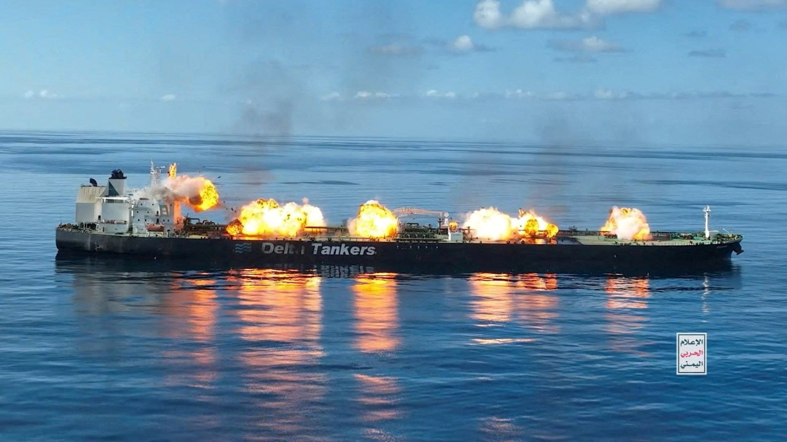

Tanker Attacks and Regional Tensions
The Strait of Hormuz plays a crucial role in global energy transportation. Around one-fifth of the world’s oil supply
passes through this route each day, connecting major oil-producing countries such as Saudi Arabia, Iraq, Kuwait, and the
United Arab Emirates to global markets. Because of this, any attack or conflict in the area immediately affects
international oil prices and shipping routes.
